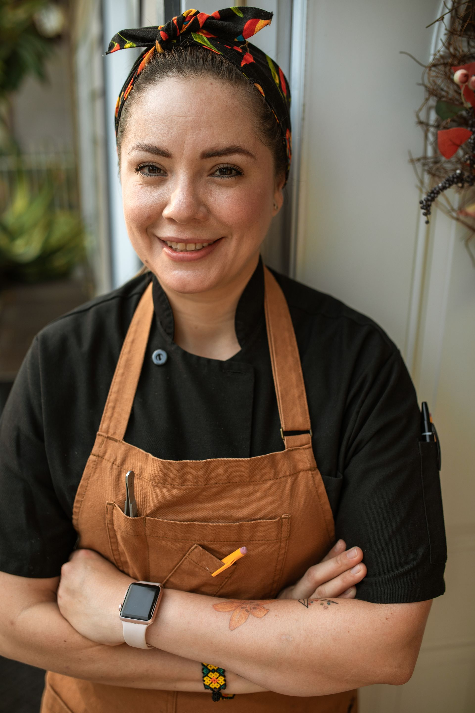
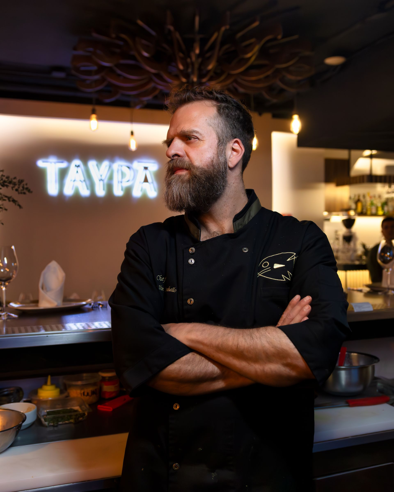
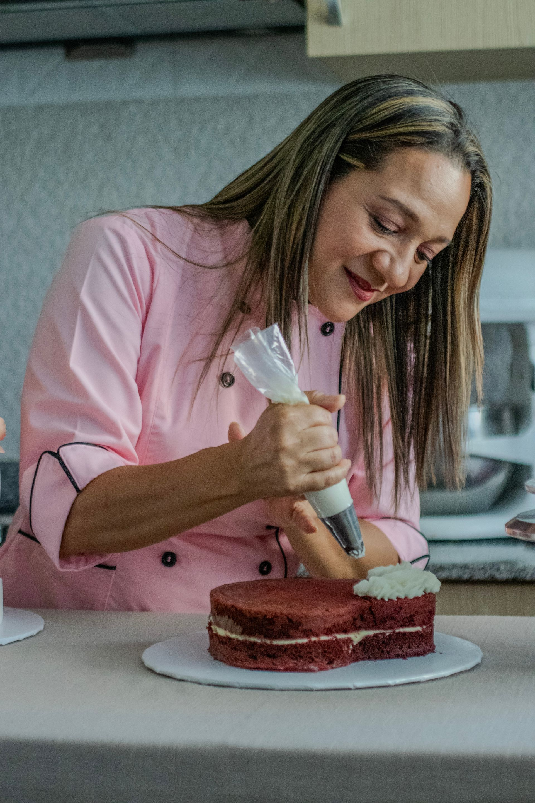

Amaia
Chef y cofundadora
Se formó en cocinas de la costa y trabaja con brasa desde hace quince años. Decide la carta cada semana después de visitar el mercado.
Un equipo pequeño que cocina y sirve en una antigua casa de piedra, con una carta que cabe en una sola hoja.
Datos provisionales. Los nombres de las personas, sus cargos, las fechas y la historia de esta página son ficticios. Cualquier parecido con personas o negocios reales es casual.
Abrimos en 2019 (fecha ficticia)
Oihan Sukaldea abrió en 2019 en una casa de piedra que tres amigos del oficio recuperaron durante dos años. Querían una sala pequeña, una cocina que se viera desde las mesas y una carta que cupiera en una sola hoja.
Desde entonces trabajamos igual: pocos platos, producto de temporada y el tiempo necesario para que cada cosa llegue a la mesa en su punto.

Chef y cofundadora
Se formó en cocinas de la costa y trabaja con brasa desde hace quince años. Decide la carta cada semana después de visitar el mercado.

Jefe de sala y sumiller
Elige los vinos de pequeños productores y explica cada plato sin prisas ni tecnicismos.

Pastelería y fermentos
Cuida los postres, los encurtidos y los vinagres que sostienen el resto de la carta.
Imágenes provisionales. Los retratos definitivos llevarán su crédito junto a cada fotografía.
Compramos a pocos proveedores y los conocemos por su nombre. Si un producto no está en su mejor momento, no sale en la carta.
Los fondos, los fermentos y las salsas llevan días de trabajo. En el servicio solo queda terminarlos bien.
Una mesa es una conversación: explicamos lo necesario, escuchamos lo que se pide y no empujamos a pedir más.